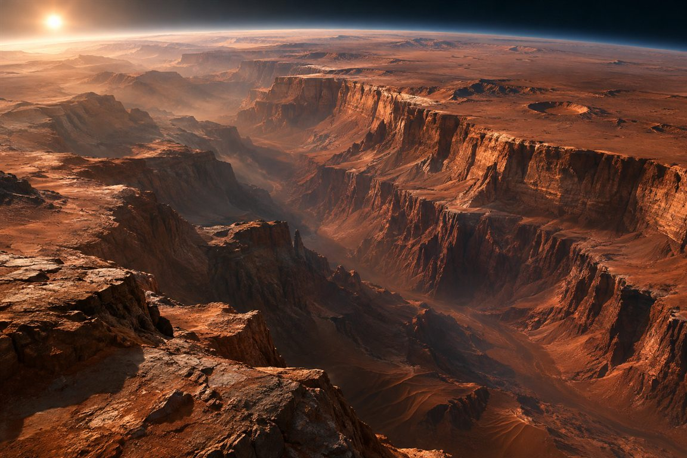
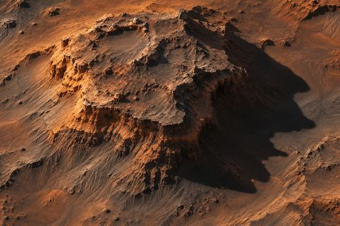
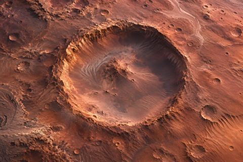

Mars
Follow orbital images and geological clues through the debates over ancient water and unusual terrain.
7 dossiers
All topics
Ancient Ocean on Mars: Evidence vs Open Debate
Could an ocean once have occupied Mars’s northern lowlands? This dossier reviews what supports the hypothesis and which parts of the shoreline and climate story are still debated.

Ancient Water on Mars and Climate Loss
Trace the evidence for ancient water on Mars through rover observations and NASA research. The dossier connects past lakes and rivers to the mechanisms that may have changed the planet’s climate.

Cydonia: Martian Mystery Region
Explore the geology of Cydonia alongside the history of the Face on Mars. The dossier ties orbital imagery to terrain, ice and climate while tracing the region’s reputation as a mystery.

Face on Mars: Official Image Reanalysis
Compare the original impression of a face in Cydonia with NASA’s later, higher-resolution images. The case shows how lighting and resolution can change what a landform appears to be.
Mars Canals: Schiaparelli, Lowell, and the Interpretive Error
Trace how Schiaparelli’s observations and Lowell’s interpretations grew into the Martian canal story. The timeline shows how viewing conditions, language and expectations shaped the claim.

Mars X Files: Anomalies vs Official Readings
Compare planetary data, unusual-looking features and Martian folklore in a single reference chart. Use it to move from a claim or image to the relevant scientific reading.

Mars X Files Map
Start here to browse the Mars dossiers by strength of evidence. The map connects ancient water, Cydonia and visual anomalies with established findings, open debates and speculative claims.